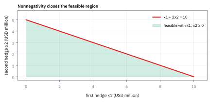
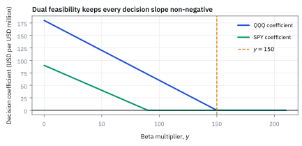
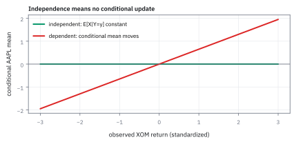

5.4 Constructing the Dual — Lagrangian Relaxation
สร้างโจทย์คู่ของ linear program (LP) ด้วยการผ่อนแรงบังคับของโจทย์เดิม
เดสก์มีเพดาน VaR 50 ล้าน ต้องแบ่งทุนให้ 3 ทีมที่ทำกำไร 20%, 21%, 9% และกิน VaR 0.30, 0.50, 0.25 ต่อทุน 1 ล้าน ทีมแรกยังติดเพดานสภาพคล่องหุ้น A ด้วย ถ้าจะไปขอผ่อนเพดาน ควรขอข้อไหนก่อน?
เฉลย: แบ่งทุน 60/64/0 ล้าน ได้กำไร 25.44 ล้านต่อปี ราคาเงาของ VaR คือ 0.42 ต่อ 1 ล้าน ของเพดาน gross คือ 0 และของสภาพคล่องหุ้น A คือ 1.85 ต่อ 1 ล้านหุ้น จึงขอสภาพคล่องหุ้น A ก่อน ส่วนเพดาน gross ขอไปก็ไม่ได้อะไร
Lagrangian relaxation ย้าย constraint เข้า objective ด้วย multiplier ซึ่งเป็นราคาของการใช้ทรัพยากร ใช้สร้าง dual หาขอบของคำตอบ และอ่านว่าทรัพยากรไหนแพงจริง
ศัพท์ที่ใช้ในหัวข้อนี้
- Value at Risk (VaR)
- ขาดทุนที่พอร์ตจะไม่เกินด้วยความมั่นใจที่กำหนดในช่วงเวลาหนึ่ง ใช้เป็นโควตาความเสี่ยงที่ฝ่ายบริหารแจกให้เดสก์และแต่ละทีม
- average daily volume (ADV)
- จำนวนหุ้นที่ซื้อขายเฉลี่ยต่อวัน ใช้ตั้งเพดานการถือหุ้นตัวหนึ่งให้ขายออกได้โดยไม่ทำให้ราคาพัง
- gross notional
- ขนาดพอร์ตรวมโดยไม่หักล้างกัน ใช้คุมขนาดงบดุลของเดสก์
- Karush–Kuhn–Tucker (KKT)
- ชุดเงื่อนไขของคำตอบที่ดีที่สุดเมื่อโจทย์มีข้อจำกัด ใช้ตรวจว่า multiplier กับข้อจำกัดที่ชนเข้าคู่กันถูกต้อง ซึ่งบทที่ 8 จะใช้กับโจทย์ไม่เชิงเส้น
- support vector machine (SVM)
- วิธีจำแนกข้อมูลใน machine learning ที่หาเส้นแบ่งกว้างที่สุด ใช้เป็นตัวอย่างว่าโจทย์นอกการเงินก็แก้ผ่าน dual แบบเดียวกัน
- constraint residual
- ค่าฝั่งซ้ายลบ limit หลังเขียน constraint เป็นรูปไม่เกินศูนย์ ใช้บอกว่าคำตอบผ่าน เท่ากับ หรือฝ่าฝืน constraint มากเท่าไร
- Lagrange multiplier
- ราคาต่อหนึ่ง native unit ของ constraint residual ใช้แปลงการผ่อนหรือฝ่าฝืน constraint ให้เป็นผลกระทบหน่วย USD
- Lagrangian
- objective บวกผลรวมของ multiplier คูณ constraint residual ใช้เชื่อม primal decisions กับ dual prices ในสมการเดียว
- Lagrangian relaxation
- วิธีนำ constraints บางแถวเข้า objective ผ่าน multipliers แล้วหาค่าต่ำสุดเหนือ decision domain ที่เหลือ ใช้สร้าง lower bound และ dual problem
- dual function
- ค่าต่ำสุดของ Lagrangian เมื่อ fix multipliers แล้ว optimize decision variables ใช้ให้ lower bound หนึ่งค่าต่อ multiplier vector
- dual feasibility
- เงื่อนไขบน multipliers ที่ทำให้ dual function ไม่ลงไปถึง minus infinity ใช้รักษา lower bound ให้มีความหมาย
- lower bound
- ค่าที่ไม่สูงกว่า feasible primal cost ใด ๆ ใช้ตรวจ solver และบีบ optimum จากด้านล่าง
- hard constraint
- limit ที่ order จริงยังต้องผ่านแม้เราจะ relax มันเพื่อคำนวณ dual ใช้แยกเครื่องมือวิเคราะห์ออกจากสิทธิ์ในการฝ่าฝืน risk policy
สัญลักษณ์ที่ใช้ในหัวข้อนี้
| สัญลักษณ์ | ความหมาย | หน่วย |
|---|---|---|
| $x_Q,x_S$ | short notionals ของ QQQ และ SPY | USD million |
| $g_B(x)$ | residual ของ minimum beta-reduction constraint ในรูปไม่เกินศูนย์ | beta-USD million |
| $g_Q(x),g_S(x)$ | residuals ของ QQQ และ SPY caps ในรูปไม่เกินศูนย์ | USD million |
| $y$ | multiplier ของ beta residual | USD ต่อ beta-USD million |
| $u_Q,u_S$ | multipliers ของ QQQ และ SPY cap residuals | USD ต่อ USD million |
| $\lambda$ | multiplier vector $(y,u_Q,u_S)$ | mixed native units ตามแต่ละ constraint |
| $\lambda_0$ | trial dual-feasible multiplier vector $(130,0,45)$ ที่ใช้วาด relaxation surface | mixed native units ตามแต่ละ constraint |
| $\mathcal L(x;\lambda)$ | Lagrangian ของ hedge problem เมื่อ decisions และ multipliers ถูกกำหนด | USD |
| $q(\lambda)$ | dual function หรือ infimum ของ Lagrangian เหนือ non-negative notionals | USD |
| $U_S$ | SPY liquidity cap ที่ใช้ทำ sensitivity check | USD million |
| $x_1,x_2,x_3$ | ทุกที่แบ่งให้ทีม stat-arb หุ้น A, ทีม macro และทีม credit | USD million |
| $c$ | กำไรคาดหมายต่อปีต่อทุน 1 ล้าน (0.20, 0.21, 0.09) | USD million ต่อ USD million |
| $a$ | VaR ที่แต่ละทีมกินต่อทุน 1 ล้าน (0.30, 0.50, 0.25) | USD million ต่อ USD million |
| $u_1,u_2,u_3$ | ราคาเงาของเพดาน VaR, gross และสภาพคล่องหุ้น A | กำไรต่อหน่วยของแต่ละเพดาน |
| $\mathcal L(x, u)$ | Lagrangian ที่ผนวกค่าปรับของข้อจำกัดเข้ากับ objective เดิม | USD |
| $q(u)$ | dual function คือค่าที่ดีที่สุดของ Lagrangian เมื่อปล่อย $x$ อิสระ | USD |
ที่มาที่ไป: แทนที่จะห้ามเด็ดขาด ให้ตั้งค่าปรับแทน
แนวคิดตั้งต้นมาจาก Joseph-Louis Lagrange ในงานกลศาสตร์ปี 1788 ซึ่งเจอปัญหาว่า วัตถุเคลื่อนที่ได้เฉพาะบนเส้นทางที่ถูกบังคับไว้ ไม่ใช่เคลื่อนที่ได้อิสระ
วิธีของเขาคือแทนที่จะห้ามเด็ดขาด ให้ติดราคาให้กับการฝ่าฝืน แล้วปล่อยให้ตัวแปรอิสระ ถ้าตั้งราคาถูกต้อง คำตอบจะไม่ฝ่าฝืนเองโดยไม่ต้องห้าม
ความคิดนี้ทรงพลังกว่าที่เห็น เพราะมันเปลี่ยนปัญหาที่มีข้อจำกัดให้เป็นปัญหาที่ไม่มีข้อจำกัด ซึ่งมีเครื่องมือแก้อยู่แล้วเต็มไปหมด
ในงานการเงิน ราคาที่ติดให้ข้อจำกัดนั้นกลายเป็นตัวเลขที่มีความหมายทางธุรกิจโดยตรง คือมันบอกว่าข้อจำกัดนั้นกำลังทำให้เราเสียโอกาสเท่าไร
ประวัติศาสตร์และที่มา: จากกลศาสตร์ของ Lagrange สู่การผ่อนคลายข้อจำกัด
ในปี 1788 Joseph-Louis Lagrange ได้ตีพิมพ์ตำราคลาสสิก Mécanique Analytique ซึ่งปฏิวัติวงการฟิสิกส์ด้วยการเสนอแนวคิด Lagrange multipliers สำหรับการเคลื่อนที่ของอนุภาคภายใต้พันธนาการทางกายภาพ เช่น ลูกตุ้มที่ถูกรั้งด้วยเชือก แทนที่จะต้องพยายามแก้ระบบสมการเพื่อกำจัดตัวแปรออกอย่างยากลำบาก Lagrange เสนอให้เปลี่ยนพันธนาการนั้นให้กลายเป็นแรงเสมือนที่ผนวกเข้าไปในสมการการเคลื่อนที่โดยตรง
เกือบสองศตวรรษต่อมา ในทศวรรษ 1970 นักวิจัยด้านการหาค่าเหมาะที่สุดอย่าง Arthur Geoffrion และ Marshall Fisher ได้นำหลักการนี้มาประยุกต์สู่ linear programming และ discrete optimization ในชื่อ Lagrangian relaxation ปัญหาในโลกจริงมักประกอบด้วยข้อจำกัดหลักที่แก้ได้ง่าย และข้อจำกัดที่เชื่อมโยงกันจนซับซ้อน การปลดข้อจำกัดที่ยุ่งยากออกแล้วแทนที่ด้วยค่าปรับ ทำให้ปัญหาแยกส่วนคำนวณได้อย่างอิสระ
ในงานวิศวกรรมการเงินและการบริหารความเสี่ยงของ Martin Haugh และ Garud Iyengar ที่มหาวิทยาลัยโคลัมเบีย Lagrangian relaxation ถูกใช้เป็นสะพานเชื่อมหลักในการสร้าง dual problem จาก primal problem ทุกรูปแบบ เพราะมันเผยให้เห็นโดยอัตโนมัติว่าเงื่อนไข dual constraints เกิดขึ้นเพื่อป้องกันไม่ให้ค่าปรับพังทลายลงสู่ลบอนันต์
ตัวอย่างแรก — ราคาเงาบอกว่าเดสก์ขาดทรัพยากรอะไรจริง ๆ
เริ่มจากโจทย์เปิดเรื่อง ทรัพยากรสามอย่างถูกแบ่งให้สามทีม คำถามสุดท้ายไม่ใช่แค่แบ่งอย่างไร แต่คือเพดานข้อไหนแพงที่สุด ซึ่ง Lagrangian relaxation ตอบได้ตรง ๆ
ขั้นที่ 1 — ของที่โจทย์ให้: ตาราง LP พร้อมหน่วยทุกแถว
ตัวแปรคือทุกที่แบ่งให้แต่ละทีม หน่วยล้านดอลลาร์ ติดลบไม่ได้เพราะแบ่งทุนติดลบไม่มีความหมาย ตัวเลขทุกตัวคือของที่โจทย์ให้
หุ้น A ซื้อขายเฉลี่ย 12 ล้านหุ้นต่อวัน นโยบายให้ถือไม่เกิน 20% ของ ADV คือ 0.20 × 12 = 2.4 ล้านหุ้น หุ้น A ราคา 25 ดอลลาร์ ทุน 1 ล้านจึงซื้อได้ 1,000,000/25 = 40,000 หุ้น = 0.04 ล้านหุ้น แถวสภาพคล่องจึงเท่ากับ x₁ ≤ 2.4/0.04 = 60
แถวสภาพคล่องต้องอยู่ในหน่วยหุ้น เพราะเพดานจริงคือจำนวนหุ้นที่ขายออกได้โดยไม่ทำให้ราคาพัง ถ้าราคาหุ้น A ขยับ ตัวเลข 0.04 เปลี่ยนแต่ 2.4 ไม่เปลี่ยน ผลข้างเคียงคือราคาเงาของแถวนี้มีหน่วยกำไรต่อล้านหุ้น ซึ่งเทียบกับแถว VaR ตรง ๆ ไม่ได้
ขั้นที่ 2 — Lagrangian ของโจทย์ max: ค่าเช่าทรัพยากรที่ไม่ได้ใช้ทำให้ได้ขอบบน
ถ้าไม่มีข้อจำกัดเลย เทเงินให้ทีมที่กำไรสูงสุดได้ไม่จำกัด ข้อจำกัดคือทั้งหมดของปัญหานี้ แทนที่จะห้ามใช้เกิน ให้ตั้งค่าเช่า uᵢ ต่อทรัพยากร i หนึ่งหน่วย แล้วปล่อยให้ทุกทีมทำอะไรก็ได้
ก้อนแรกคือกำไรจริง ก้อนที่สองคือเงินคืนจากทรัพยากรที่ไม่ได้ใช้ สำหรับแผนที่ทำได้จริง ก้อนที่สองไม่ติดลบ Lagrangian จึงเป็นขอบบนของกำไรเสมอ
จัดรูปให้ x อยู่ที่เดียว ถ้าตัวคูณของ x ตัวใดเป็นบวก ดันตัวนั้นขึ้นได้เรื่อย ๆ ขอบบนพุ่งเป็นอนันต์ใช้ไม่ได้ จึงบังคับ Aᵀu ≥ c แล้วขอบบนคือ uᵀb เลือก u ที่ให้ขอบบนต่ำที่สุด ได้ dual เป็นโจทย์ min เพราะ primal เป็น max ขอบที่ dual ให้จึงอยู่เหนือคำตอบเสมอ
ขั้นที่ 3 — เขียน dual เป็นตัวเลข: หนึ่งแถวต่อหนึ่งทีม
แต่ละแถวของ Aᵀu ≥ c คือหนึ่งคอลัมน์ของ A หรือหนึ่งทีม
อ่านแต่ละแถวว่า ค่าเช่าทรัพยากรที่ทีมนั้นใช้ต้องไม่ถูกกว่ากำไรที่ทีมนั้นทำได้ ถ้ามีทีมที่ค่าเช่ายังถูกกว่ากำไร แปลว่าตั้งราคาทรัพยากรต่ำเกินไป ทุกคนจะแห่มาขอ ราคาที่ถูกต้องคือราคาต่ำที่สุดที่ไม่มีใครอยากขอเพิ่ม
ขั้นที่ 4 — เดา u หนึ่งชุด: ได้ขอบบนโดยยังไม่ต้องแก้อะไร
เลือก u ที่ถูกกติกามาสักชุด ไม่ต้องดีที่สุด แล้วตรวจทีละแถว
ยังไม่ได้แก้ primal เลย แต่พิสูจน์ได้แล้วว่ากำไรสูงสุดของเดสก์นี้ไม่มีทางเกิน 29.8 ล้าน ใครอ้างว่าจัดพอร์ตได้กำไร 32 ล้าน ถูกหักล้างทันทีในสามบรรทัด ในงานใหญ่ วิธีนี้คือแก้ปัญหาที่ผ่อนแล้วซึ่งง่ายกว่าเพื่อได้ขอบ แล้วค่อยขยับ u ให้ขอบแน่นขึ้น
ขั้นที่ 5 — แก้ primal: เรียงทีมตามกำไรต่อ VaR หนึ่งหน่วย
ทรัพยากรที่หายากที่สุดคือ VaR จึงจัดอันดับด้วยกำไรส่วน VaR ที่กิน แล้วเติมตามลำดับ
ทีม 1 คุ้มที่สุดแต่ติดเพดานสภาพคล่องที่ 60 ทีม 2 รับ VaR ที่เหลือทั้งหมด VaR ใช้หมดพอดี ทีม 3 ไม่ได้อะไร เพดาน gross ยังเหลือ 76 จึงไม่ชน กำไร 25.44 ต่ำกว่าขอบบน 29.8 ที่เดาไว้ ขอบบนใช้ได้จริงแต่หลวมไป 4.36
การเรียงแบบนี้ใช้ได้ที่นี่เพราะมีทรัพยากรที่ชนจริงแค่สองตัว และแต่ละทีมใช้ทรัพยากรเป็นสัดส่วนตรง ถ้ามีหลายข้อจำกัดชนพร้อมกันหรือมีเงื่อนไขจำนวนเต็ม ต้องแก้ LP จริง
ขั้นที่ 6 — แกะราคาเงาออกจาก complementary slackness
สองกฎ: ข้อจำกัดที่ไม่ชนมีราคาเงาเป็นศูนย์ และทีมที่ได้เงินทำให้แถว dual ของทีมนั้นเป็นสมการพอดี
ทีม 3 ไม่ได้เงินเพราะค่าเช่า VaR ที่ต้องจ่าย 0.105 แพงกว่ากำไร 0.09 อยู่ 0.015 ถูกคัดออกถูกต้อง
u₁ เท่ากับอัตราส่วนของทีม 2 พอดี เพราะทีม 2 คือผู้ใช้ VaR หน่วยสุดท้าย ถ้าได้ VaR เพิ่ม 1 ล้าน มันจะไหลไปทีม 2 เพราะทีม 1 ติดสภาพคล่องและทีม 3 ไม่คุ้ม ราคาเงาของทรัพยากรจึงเท่ากับผลตอบแทนของผู้ใช้รายถัดไปที่ต่อคิว ไม่ใช่ของทีมที่เก่งที่สุด
ขั้นที่ 7 — strong duality: กำไรแตกตามทรัพยากรที่ชนได้พอดี
คูณราคาเงากับโควตาที่มีแล้วบวก ต้องได้กำไรจากขั้นที่ 5 พอดี
อ่านบรรทัดบนเป็นงบกำไรแบบใหม่: กำไร 25.44 ล้าน มี 21.00 ล้านที่เกิดจากโควตา VaR และ 4.44 ล้านที่เกิดจากสภาพคล่องหุ้น A ส่วนเพดาน gross ไม่ได้สร้างมูลค่าเลย
นี่ตอบคำถามที่ทุกเดสก์เถียงกันทุกปีว่ากำไรนี้เป็นของใคร: กำไรทั้งก้อนแตกออกพอดีตามทรัพยากรที่ชน ไม่ใช่ตามคนที่นั่งเทรด และผลรวมลงตัวเสมอเพราะ strong duality
ขั้นที่ 8 — ทดสอบราคาเงาของจริง: ผ่อนทีละหน่วยแล้วแก้ใหม่
ราคาเงาใช้ได้เฉพาะช่วงหนึ่ง วิธีตรวจคือผ่อนเพดานทีละข้อหนึ่งหน่วยแล้วตามรอยเงิน
ทั้งสามแถวตรงกับ u* ผ่อนสภาพคล่อง 1 ล้านหุ้นเท่ากับทุนทีม 1 เพิ่ม 25 ล้าน แต่กิน VaR เพิ่ม 7.5 ล้านซึ่งต้องแย่งจากทีม 2 กำไรสุทธิ 1.85 จึงเป็นกำไรหลังหักค่าเสียโอกาสของ VaR ที่แย่งมาแล้ว ราคาเงาคิดผลกระทบทั้งระบบให้เสร็จ
ดันสภาพคล่องต่อไปเรื่อย ๆ จน x₁ กิน VaR หมด 50 ล้านที่ x₁ = 50/0.30 = 166.7 ทีม 2 เหลือศูนย์ แล้วราคาเงาเปลี่ยนทันทีเพราะผู้ใช้รายถัดไปเปลี่ยนคน การผ่อนทีละหน่วยแล้วแก้ใหม่จึงเป็นวิธีเช็กว่ายังอยู่ในช่วงเดิม
คำตอบ — ขอสภาพคล่องหุ้น A ก่อน อย่าไปขอเพดาน gross
คำถาม: แบ่งทุนอย่างไรให้กำไรสูงสุด ราคาเงาของสามเพดานเป็นเท่าไร และควรไปขอผ่อนข้อไหนก่อน?
ของที่มี: ขั้นที่ 1 ถึง 8
1. แบ่งทุน (60, 64, 0) ล้าน กำไร 25.44 ล้านต่อปี ทีม credit ไม่ได้เพราะกำไรต่อ VaR 0.36 ต่ำกว่าราคาเงา 0.42
2. Dual คือ min uᵀb ภายใต้ Aᵀu ≥ c และ u ≥ 0 ได้ u* = (0.42, 0, 1.85) และ D = 21.00 + 0 + 4.44 = 25.44 = P
3. สภาพคล่องหุ้น A ทุก 1 ล้านหุ้นที่ผ่อนได้ให้กำไรเพิ่ม 1.85 ล้านต่อปี เพดาน gross มีราคาเงาศูนย์
เฉลย: ขอผ่อนสภาพคล่องหุ้น A ก่อน และประโยคที่ใช้ในห้องประชุมได้คือ ขอ VaR เพิ่ม 10 ล้านจะได้กำไรคาดหมายเพิ่ม 10 × 0.42 = 4.2 ล้านต่อปี
เช็ก 10 วินาที: 0.20(60) + 0.21(64) = 25.44 และ 50(0.42) + 2.4(1.85) = 25.44
งานจริง: ราคาเงาเปลี่ยนการประชุมงบความเสี่ยงจากการเถียงด้วยความรู้สึกเป็นตัวเลขที่ตรวจได้ แต่มีเงื่อนไขสามข้อ: ใช้ได้เฉพาะการขยับเล็ก ๆ รอบจุดปัจจุบัน สมมติว่า c และ a คงที่ ทั้งที่กำไรต่อทุนลดลงเมื่อพอร์ตใหญ่ขึ้นเพราะ market impact และ VaR ไม่ได้บวกกันเป็นเส้นตรงจริงเพราะทีมต่าง ๆ กระจายความเสี่ยงให้กัน แถว VaR นี้จึงเป็นการประมาณแบบระวังไว้ก่อน
กับดัก: อย่าเทียบ 1.85 กับ 0.42 แล้วสรุปว่าสภาพคล่องสำคัญกว่า VaR 4.4 เท่า หน่วยต่างกัน 0.42 คือกำไรต่อ VaR 1 ล้าน ส่วน 1.85 คือกำไรต่อ 1 ล้านหุ้นซึ่งเท่ากับทุน 25 ล้าน ปรับหน่วยแล้วคือ 0.074 ต่อทุน 1 ล้าน ให้เทียบราคาเงาแต่ละตัวกับต้นทุนจริงของการได้ทรัพยากรนั้นเพิ่มหนึ่งหน่วย
โค้ดตรวจ LP ราคาเงา และการผ่อนเพดาน
import numpy as np
from scipy.optimize import linprog
c=[0.20,0.21,0.09]; A=[[0.30,0.50,0.25],[1,1,1],[0.04,0,0]]
def solve(b):
r=linprog([-v for v in c],A_ub=A,b_ub=b,method="highs")
return r.x,-r.fun,-r.ineqlin.marginals
x,P,u=solve([50,200,2.4])
assert np.allclose(x,[60,64,0]) and abs(P-25.44)<1e-9
assert np.allclose(u,[0.42,0,1.85])
assert abs(np.dot(u,[50,200,2.4])-P)<1e-9
assert abs(solve([51,200,2.4])[1]-25.86)<1e-9
assert abs(solve([50,200,3.4])[1]-27.29)<1e-9
assert abs(np.dot([0.5,0,2.0],[50,200,2.4])-29.8)<1e-9โค้ดนี้แก้ LP ด้วย solver ตรวจคำตอบ (60, 64, 0) กำไร 25.44 ราคาเงา (0.42, 0, 1.85) ความเท่ากันของ primal กับ dual และแก้ใหม่หลังผ่อน VaR กับสภาพคล่องหนึ่งหน่วย
รูปทั่วไป — สร้าง dual ด้วย Lagrangian relaxation เมื่อ primal เป็นโจทย์ min
ตัวอย่างแรกเป็นโจทย์ max จึงได้ขอบบน บรรทัดข้างล่างคือกระจกของมันสำหรับโจทย์ min ซึ่งให้ขอบล่าง กระบวนการผ่อนคลายข้อจำกัดด้วย Lagrangian เป็นวิธีสากลที่ใช้สร้างโจทย์คู่สำหรับ linear program ทุกประเภท โดยเริ่มจากการติดราคาให้กับการละเมิด แล้วจัดกลุ่มตัวแปรเพื่อค้นหาเงื่อนไขที่ทำให้ขอบล่างมีค่าคงที่ไม่ร่วงลงสู่ลบอนันต์
เริ่มต้นจากโจทย์ primal ที่ต้องการ minimize ต้นทุนภายใต้อสมการ $Ax \ge b$ เราผ่อนคลายข้อจำกัดด้วยการหักค่าปรับ $u^{\mathsf T}(Ax-b)$ โดยกำหนดให้ตัวคูณ $u \ge 0$
เมื่อจัดกลุ่มพจน์ใหม่ พจน์คงที่ที่ไม่มีตัวแปร $x$ จะแยกออกมาเป็น $b^{\mathsf T}u$ ขณะที่ตัวแปร $x$ จะถูกคูณด้วย vector ของความชัน $c - A^{\mathsf T}u$
หากความชันหน้าตัวแปรมีค่าติดลบ การเลือก $x \ge 0$ ให้ใหญ่ขึ้นเรื่อย ๆ จะทำให้ค่าดิ่งลงสู่ลบอนันต์ ดังนั้นขอบล่างจะมีค่าจำกัดก็ต่อเมื่อความชันไม่ติดลบ นั่นคือ $A^{\mathsf T}u \le c$
การค้นหาขอบล่างที่ดีที่สุดจึงนำไปสู่โจทย์ maximize $b^{\mathsf T}u$ ภายใต้เงื่อนไข $A^{\mathsf T}u \le c$ ซึ่งคืนรูป dual LP มาตรฐานอย่างสมบูรณ์
ตัวอย่างที่สอง — Lagrangian ของ beta hedge ด้วย QQQ และ SPY
โจทย์ให้อะไรมาบ้าง: เริ่มจาก primal LP ของตัวอย่างที่สองในหัวข้อ 5.1–5.3 แล้วเขียนทุก constraint เป็น residual ไม่เกินศูนย์ สำหรับ feasible hedge และ multipliers ไม่ติดลบ Lagrangian จะไม่สูงกว่า primal cost จึงสร้าง lower bound ได้ วิธีเดียวกันเป็นสะพานจาก constrained optimization ไปสู่ multiplier analysis ที่ใช้กว้างกว่างาน linear
ขั้นที่ 9 — นิยาม residuals พร้อมหน่วย
เริ่มจากเขียนว่าแต่ละข้อบังคับยังเหลือช่องว่างเท่าไร พร้อมระบุหน่วยให้ชัด เพราะราคาที่จะติดให้มันต้องมีหน่วยที่เข้ากัน
$g_B$ วัด beta exposure ที่ยังขาดหน่วย beta-USD million; $g_Q$ และ $g_S$ วัด notional ที่เกิน caps หน่วย USD million ค่าที่ไม่เกินศูนย์จึงหมายถึง hedge ผ่าน constraint แถวนั้น
ขั้นที่ 10 — นิยามของ Lagrangian: ติดราคาให้การฝ่าฝืนแต่ละข้อ
บรรทัดนี้เป็น นิยาม ของก้อนที่เราสร้างขึ้นมาเอง ไม่ได้พิสูจน์มาจากอะไร แนวคิดคือแทนที่จะห้ามเด็ดขาด เราตั้งค่าปรับให้กับการฝ่าฝืนทุกข้อ ตัวคูณแต่ละตัวคือราคาต่อหนึ่งหน่วยที่ฝ่าฝืน และถูกบังคับให้ไม่ติดลบ ประโยชน์ของการเขียนแบบนี้จะเห็นในขั้นถัดไป ตอนจัดกลุ่มใหม่
การสร้าง Lagrangian เริ่มต้นจาก function ต้นทุนเดิมของ primal แล้วบวกเพิ่มด้วยค่าปรับของการฝ่าฝืนแต่ละข้อ
แถว beta มีตัวคูณ $y$ ถ่วงน้ำหนักปริมาณ beta ที่ยังขาด ขณะที่เพดานสภาพคล่องของ QQQ และ SPY มีตัวคูณ $u_Q$ และ $u_S$ คอยปรับขนาดคำสั่งที่เกินโควตา
ตัวคูณทั้งหมดถูกบังคับไม่ให้ติดลบ เพื่อให้การละเมิดข้อจำกัดส่งผลเพิ่มต้นทุนรวมเสมอ โครงสร้างนี้ทำให้เราสามารถยุบข้อจำกัดทั้งหมดเข้าสู่สมการเดียวได้อย่างเป็นระบบ
ขั้นที่ 11 — จัดกลุ่ม constant และ decision coefficients
จัดกลุ่มใหม่ให้เห็นชัดว่าอะไรคงที่ และอะไรคูณอยู่กับตัวแปรที่เราเลือกได้ สามบรรทัดนี้ไม่มีอะไรใหม่เลยทางคณิตศาสตร์ มีแค่การกระจายและการรวบพจน์ แต่มันคือขั้นที่ทำให้เห็นว่า dual มาจากไหน
ทั้งขั้นนี้ไม่มีคณิตศาสตร์ใหม่เลย มีแค่กระจายวงเล็บแล้วรวบพจน์ใหม่ แต่มันคือขั้นที่ทำให้เห็นว่า dual มาจากไหน บรรทัดสองกระจายวงเล็บทั้งสามออกให้หมด แล้วบรรทัดสามจัดกลุ่มใหม่ตามตัวแปรที่เราเลือกได้ เก็บพจน์ที่ไม่มี $x$ ไว้ข้างหน้า ที่เหลือรวบเข้าวงเล็บของตัวเอง
ประโยชน์อ่านได้ทันที: ถ้าวงเล็บหน้า $x_Q$ เป็นลบ เราจะดัน $x_Q$ ให้ใหญ่ขึ้นเรื่อย ๆ แล้วค่าจะดิ่งไม่มีขอบ dual จึงต้องบังคับให้วงเล็บนั้นไม่ติดลบ ซึ่งเป็นที่มาของข้อบังคับในขั้นถัดไป
ขั้นที่ 12 — หา dual function เหนือ non-negative notionals
ตัวแปรที่เราเลือกได้จะถูกดันไปสุดขอบเสมอ ยกเว้นตัวคูณของมันเป็นศูนย์พอดี เงื่อนไขนั้นเองที่กลายเป็นข้อบังคับของโจทย์คู่
$q$ คือ lower bound หน่วย USD; ถ้า decision coefficient ใดติดลบ เราดัน non-negative notional ตัวนั้นขึ้นได้ไม่จำกัดและ $\mathcal L$ ลงสู่ minus infinity ดังนั้น coefficients ทั้งสองต้องไม่ติดลบ
ขั้นที่ 13 — dual feasibility ที่ได้ตรงกับหัวข้อ 5.3
ผลที่ได้ตรงกับโจทย์คู่ที่เขียนไว้ในหัวข้อก่อนหน้าทุกบรรทัด แปลว่าสองวิธีสร้างโจทย์คู่ให้ผลเดียวกัน
การป้องกันไม่ให้ค่า infimum ดิ่งลงสู่ลบอนันต์ บังคับให้ตัวคูณหน้าตัวแปรทั้งสองต้องไม่ติดลบ
เงื่อนไขของ QQQ จัดรูปใหม่ได้เป็น $1.2y - u_Q \le 180$ ซึ่งจำกัดไม่ให้มูลค่า beta ส่วนเกินสูงกว่าต้นทุนการ short
ในทำนองเดียวกัน เงื่อนไขของ SPY คือ $y - u_S \le 90$ ทั้งสองอสมการรวมกับเงื่อนไขตัวคูณไม่ติดลบ ให้ผลลัพธ์ตรงกับ dual constraints ของหัวข้อ 5.3 อย่างแม่นยำ
ขั้นที่ 14 — multipliers ที่ optimum คืน \$1,260
แทนค่าที่จุดเหมาะที่สุด ค่าของโจทย์คู่ต้องเท่ากับค่าของโจทย์เดิมพอดี
การแทนชุดตัวคูณที่จุดเหมาะที่สุด $(150, 0, 60)$ ลงในสูตรคำนวณ dual function ให้ค่าขอบล่าง 1,260 ดอลลาร์
เมื่อตรวจสอบความชันหน้าตัวแปรทั้งสอง พบว่ากลายเป็นศูนย์พอดีทั้งคู่ ทำให้พจน์ของ $x_Q$ และ $x_S$ หายไป
ผลลัพธ์คือ Lagrangian กลายเป็นระนาบคงที่ที่ระดับ 1,260 ดอลลาร์ทั่วทั้งโดเมน ไม่ว่าเราจะเลือกค่า $x$ ใดก็ตาม ขอบล่างจึงแตะกับคำตอบของโจทย์เดิมพอดี
ขั้นที่ 15 — ตรวจ relaxation surface ด้วย multiplier ที่ feasible แต่ยังไม่ optimal
ลองใช้ราคาที่ถูกกติกาแต่ยังไม่ดีที่สุด เพื่อยืนยันว่ามันให้ขอบล่างเสมอ ไม่เคยเกินจริง
การทดลองใช้ชุดตัวคูณ $\lambda_0=(130,0,45)$ ซึ่งอยู่ใน feasible region แต่ยังไม่ optimal ให้ขอบล่างที่จุดตัดแกน 1,134 ดอลลาร์
ความชันหน้า $x_Q$ และ $x_S$ มีค่าเป็นบวก 24 และ 5 ดอลลาร์ตามลำดับ ยืนยันว่าระนาบนี้เอียงขึ้นเมื่อตัวแปรเพิ่มขึ้น
เมื่อนำจุด primal optimum $(4, 6)$ มาแทนค่า จะได้ความสูงของระนาบเท่ากับ 1,260 ดอลลาร์พอดี แสดงให้เห็นว่าระนาบ relaxation จะอยู่ใต้ feasible points เสมอและแตะยอดที่จุดคำตอบจริง
ขั้นที่ 16 — ใช้ SPY multiplier ตรวจการผ่อน cap หนึ่งหน่วย
ราคาเงาไม่ใช่ตัวเลขลอย ๆ มันบอกตรง ๆ ว่าถ้าผ่อนข้อบังคับนั้นหนึ่งหน่วย จะประหยัดได้เท่าไร
เมื่อขยายเพดานสภาพคล่องของ SPY จาก 6 เป็น 7 ล้านดอลลาร์ เราสามารถเพิ่มการ short ตัวที่ถูกกว่าได้เต็มจำนวน 7 ล้าน
ภาระความเสี่ยงที่เหลือให้ QQQ เติมลดลงเหลือ 3.8 หน่วย คิดเป็นขนาดคำสั่ง $19/6$ ล้านดอลลาร์
ต้นทุนใหม่คำนวณได้ 1,200 ดอลลาร์ ลดลงจากเดิม 60 ดอลลาร์ ตรงกับค่า shadow price $u_S^*=60$ ซึ่งพิสูจน์ว่า multiplier ทำนายอัตราการประหยัดต้นทุนต่อหนึ่งหน่วยของการผ่อนคลายข้อจำกัดได้อย่างแม่นยำ
แล้วเอาไปใช้ทำอะไรได้จริงบ้าง
การสร้างโจทย์คู่ด้วยการติดราคาให้ข้อจำกัด เป็นเทคนิคที่ใช้ต่อได้ทั้งเล่ม
ใช้กับปัญหาที่ใหญ่เกินกว่าจะแก้ตรง ๆ โดยแตกเป็นปัญหาย่อยที่แก้แยกกันได้
ใช้หาขอบล่างของต้นทุน เพื่อรู้ว่าคำตอบที่มีอยู่ห่างจากคำตอบที่ดีที่สุดแค่ไหน ซึ่งสำคัญเมื่อเวลาไม่พอจะหาคำตอบที่ดีที่สุดจริง
ใช้เป็นแนวคิดตั้งต้นของ Lagrange multipliers ในบทถัดไป ซึ่งเป็นเครื่องมือหลักของการจัดพอร์ต
แนวคิดติดราคาให้ข้อจำกัดเดียวกันนี้ใช้ต่อใน optimization แบบไม่เชิงเส้นของบทที่ 8 ในเงื่อนไข Karush–Kuhn–Tucker (KKT) ใน support vector machine (SVM) ของ machine learning และในการตั้งราคา derivative ทุกครั้งที่เห็น Lagrange multiplier ให้อ่านว่าราคาของข้อจำกัดนั้น
Figure 5.4a — Lagrangian relaxation surface

พื้นผิวจริงที่ trial multipliers $(130,0,45)$ คือระนาบ $1134+24x_Q+5x_S$ จุด primal optimum อยู่ที่ความสูง \$1,260 ขณะที่จุดต่ำสุดของพื้นผิวให้ dual lower bound \$1,134
Figure 5.4b — Dual function over the beta multiplier

เมื่อเลือก cap multipliers ต่ำสุดที่ยัง dual-feasible ค่า $q(y)$ สูงขึ้นจนถึง \$1,260 ที่ $y=150$ แล้วลดลง การ maximize lower bound จึงเลือก beta price \$150
Figure 5.4c — Coefficients that protect the lower bound

dual-feasible cap prices ทำให้ coefficients ของทั้ง QQQ และ SPY ไม่ติดลบ ที่ $y=150$ ทั้งคู่แตะศูนย์พร้อมกัน จึงไม่มี direction ที่ลาก Lagrangian ลงสู่ minus infinity
Figure 5.4d — Relaxing the binding SPY cap

การผ่อน SPY cap หนึ่ง USD million ลด cost \$60 ตาม multiplier: order เปลี่ยนจาก $(4,6)$ เป็นประมาณ $(3.167,7)$ แต่ beta reduction ยังคง 10.8
คำตอบ — Lagrangian ตีราคา SPY cap ที่ 60 USD
คำตอบ: multipliers (150,0,60) ทำให้ dual value เท่ากับ primal cost 1,260 USD และ SPY cap มีราคา 60 USD ต่อ capacity เพิ่ม 1 USD million
ตรวจเองใน 10 วินาที: เมื่อเพิ่ม SPY cap เป็น 7 ให้ QQQ เท่ากับ 19/6 แล้วเช็ก 1.2×(19/6) + 7 = 10.8; cost ใหม่ 180×(19/6) + 90×7 = 1,200 USD ต่ำกว่าเดิม 60
ใช้ตัดสินใจ: ขอ SPY capacity เพิ่มเมื่อ operational cost ของ capacity 1 USD million ต่ำกว่า saving 60 USD และต้องยืนยัน liquidity กับ linear-impact assumption ก่อนส่ง order
กับดัก: คิดว่า relaxation คือใบอนุญาตฝ่า limit
Lagrangian relaxation ย้าย constraint เข้า objective เพื่อสร้าง bound และ sensitivity เท่านั้น final hedge ยังต้องผ่าน beta target กับ liquidity caps จริง multiplier เป็นป้ายราคา ไม่ใช่บัตรผ่าน risk control — solver ที่รายงาน lower bound สวยแต่ order ฝ่า hard limit ยังเป็น solver ที่ส่งงานไม่ได้
ข้อจำกัด: วิธีนี้สมมติอะไร และของจริงเป็นอย่างไร
| เรื่อง | วิธีนี้สมมติว่า | ของจริงเป็นอย่างไร | ผลที่ตามมาเวลาใช้งาน |
|---|---|---|---|
| ช่องว่างระหว่างสองด้าน | สองด้านให้คำตอบเท่ากัน | จริงสำหรับปัญหาเส้นตรง แต่ไม่จริงทั่วไป | ในปัญหาที่มีจำนวนเต็มหรือความโค้ง ขอบล่างที่ได้อาจต่ำกว่าคำตอบจริงเสมอ |
| การเลือกราคา | หาราคาที่ดีที่สุดได้ | การหานั้นเองเป็นอีกปัญหาหนึ่งที่ต้องแก้ | อาจใช้เวลามากกว่าการแก้ปัญหาเดิมตรง ๆ ในบางกรณี |
| ความหมาย | ราคาเงาตีความได้ทางธุรกิจ | บางข้อจำกัดเป็นเรื่องเทคนิคล้วน | การพยายามหาความหมายให้ทุกตัวทำให้เข้าใจผิดได้ |
แถวแรกเป็นเหตุผลที่ปัญหาที่มีจำนวนเต็มถึงยากกว่ามาก แม้จะดูคล้ายกัน
สรุปที่ใช้ได้จริง
- ในโจทย์ max ค่าเช่าทรัพยากรที่ไม่ได้ใช้ทำให้ Lagrangian เป็นขอบบน dual จึงเป็นโจทย์ min: เดสก์สามทีมได้ (60, 64, 0) กำไร 25.44 และราคาเงา (0.42, 0, 1.85) แตกกำไรได้พอดี 21.00 + 0 + 4.44
- ราคาเงาเท่ากับผลตอบแทนของผู้ใช้ทรัพยากรรายถัดไป และใช้ได้เฉพาะช่วงที่ผู้ใช้รายนั้นยังไม่เปลี่ยน ตรวจด้วยการผ่อนทีละหน่วยแล้วแก้ใหม่
- เขียน residuals เป็น $g_B,g_Q,g_S\le0$ แล้วจับคู่กับ non-negative multipliers ที่มีหน่วยสอดคล้องกัน
- dual function เป็น finite lower bound ก็ต่อเมื่อ decision coefficients ไม่ติดลบ
- multipliers $(150,0,60)$ ทำให้ $q=\$1{,}260$ และคืน dual จากหัวข้อ 5.3 ทุกเครื่องหมาย
- SPY multiplier \$60 ทำนาย local saving จาก cap เพิ่ม \$1M แต่ final order ยังต้องผ่าน hard constraints